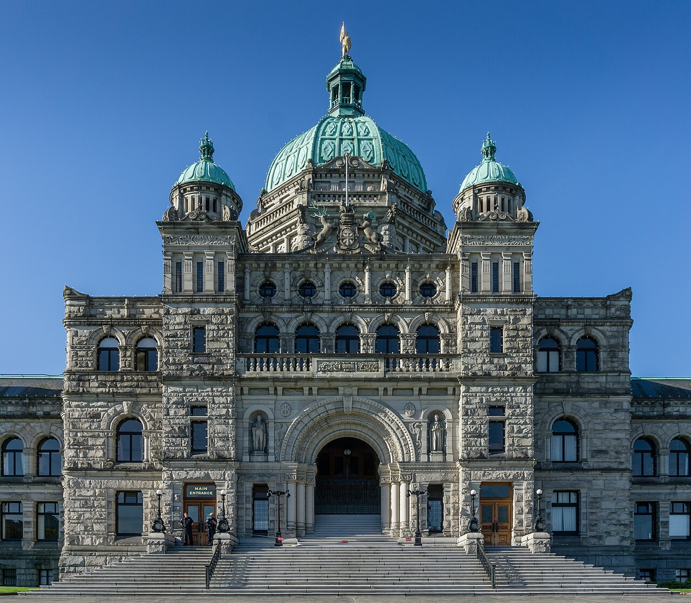
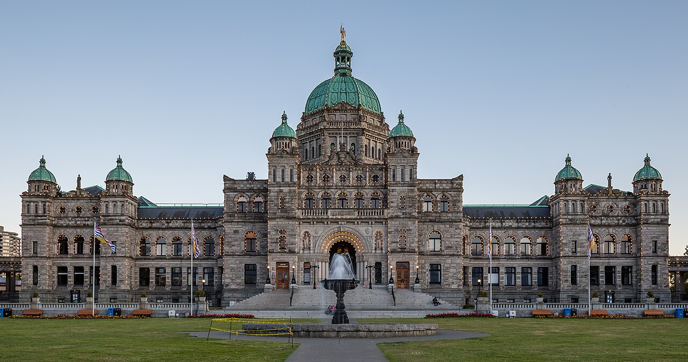

Choose a province to see its latest election results.
October 19, 2024 · 93 seats · Majority: 47 seats. The BC NDP took 47 of 93 seats on 44.87% of the vote — the narrowest possible majority.
Majority: 47 seats.
Tap a riding on the map, or pick one below, to see all its candidates. Ridings are coloured by the winning party.
Pick a riding to see all its candidates.
Coloured by the winning party — tap a tile to jump to its full result.
No ridings match your search.


Total valid votes: 2,105,341. Seats: BC NDP 47, Conservative Party 44, BC Green Party 2. Majority: 47 seats.
Source: Elections BC, Statement of Votes, 43rd Provincial General Election, October 19, 2024 — elections.bc.ca